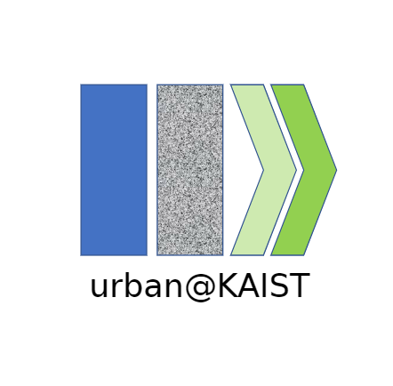
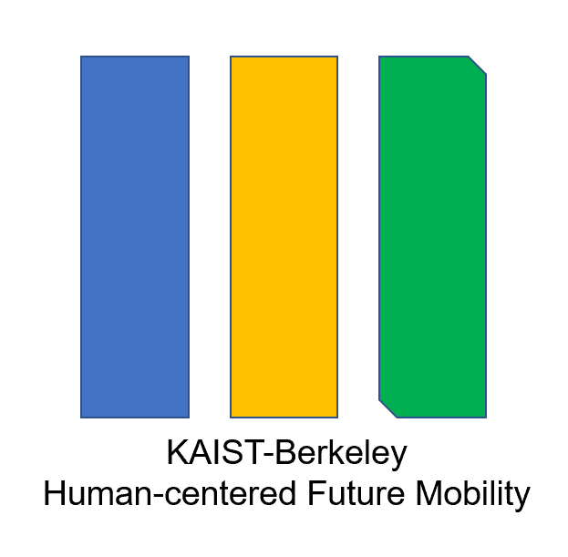
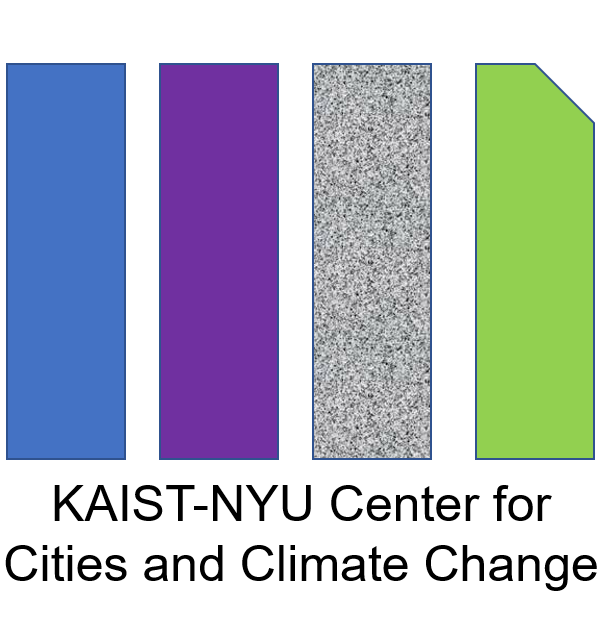
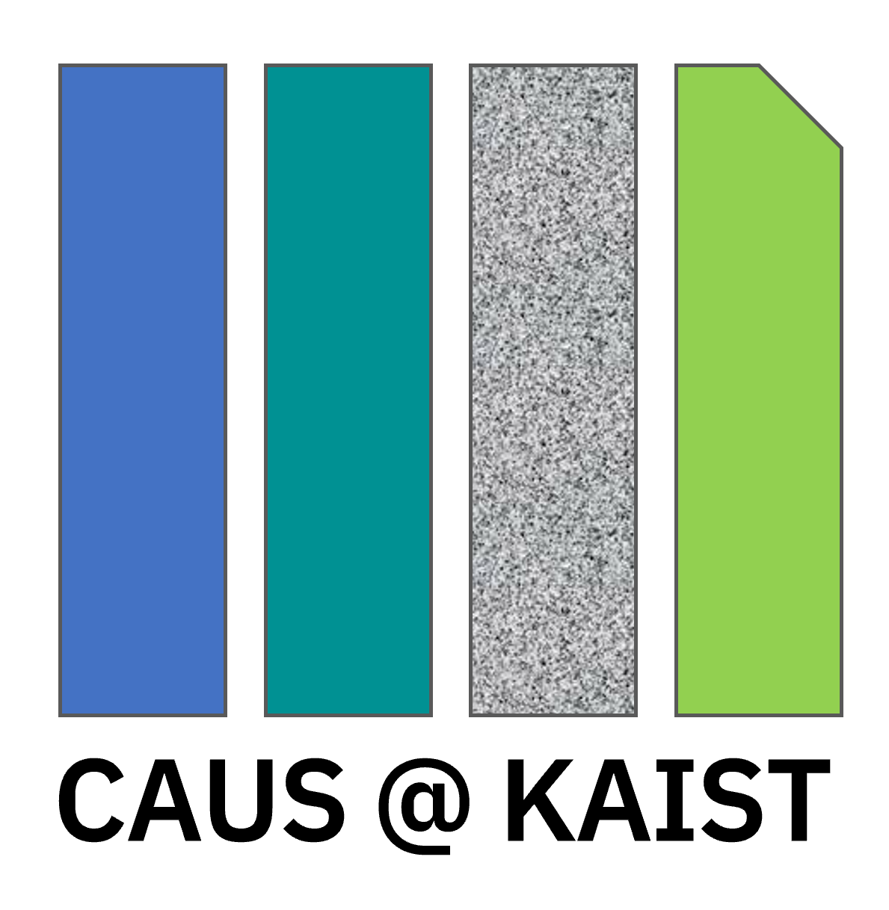

UAII develops core technologies for advancing AI in future cities.
Two core research themes define our approach — one treating the cities of today, the other building the cities of tomorrow.
Cities are living systems — and like any living thing, they suffer. Population shift. Mental health crises. Climate stress. Gridlock.
Doctor City treats the urban environment as a patient. AI and data identify what's wrong, prescribe evidence-based interventions, and monitor recovery.



The greatest urban challenges aren't solved by fixing what's broken — they're solved by imagining what's never been built.
CityFWD.ai is greenfield thinking at civilization scale. We design cities from the ground up using technologies not yet in practice, guided by AI that simulates futures before a single foundation is laid.
